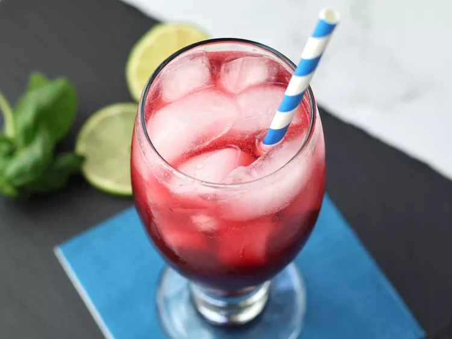

Pomegranate-fizz

Description
This pomegranate fizz is a refreshing and vibrant mocktail that balances the tartness of pomegranate juice with the herbal notes of fresh basil, while a hint of agave adds a touch of natural sweetness. With a bubbly finish from a splash of club soda, this drink is light and effervescent.
Ingredients
- 5 fresh basil leaves
- 1 tablespoon agave syrup or honey
- 1 fluid ounce fresh lime juice
- 3 fluid ounces pomegranate juice
- 4 fluid ounces club soda
- ice cubes, as needed
- 1 lime wedge
Step-by-Step
- In a shaker, add basil leaves with lime juice and agave syrup and mash with a cocktail muddler. Add pomegranate juice to the shaker and shake well.
- Fill a glass with ice cubes and strain shaker contents into the glass. Top with club soda and garnish with lime wedge.
Home